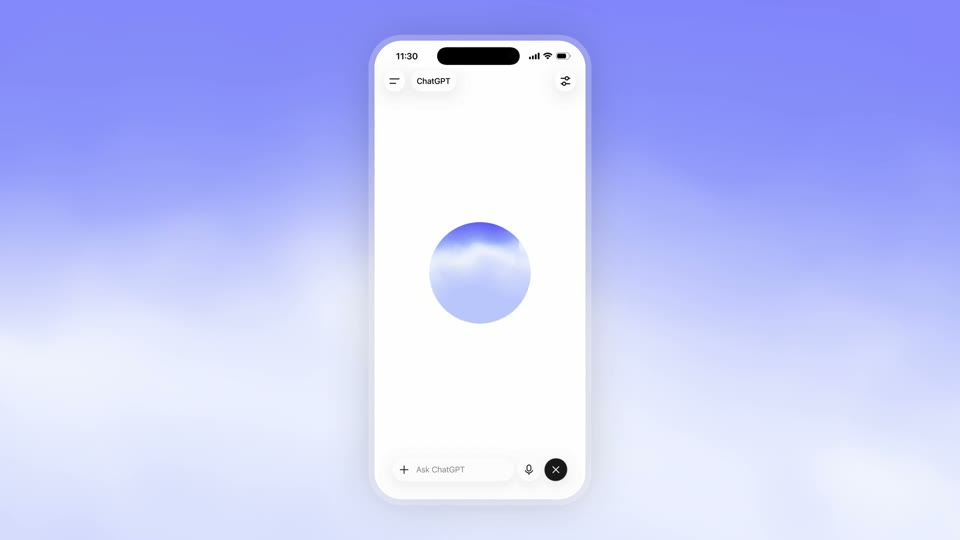
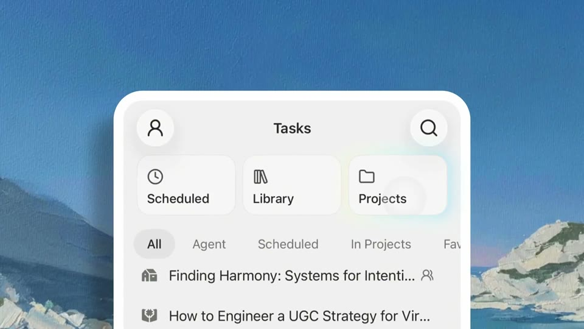
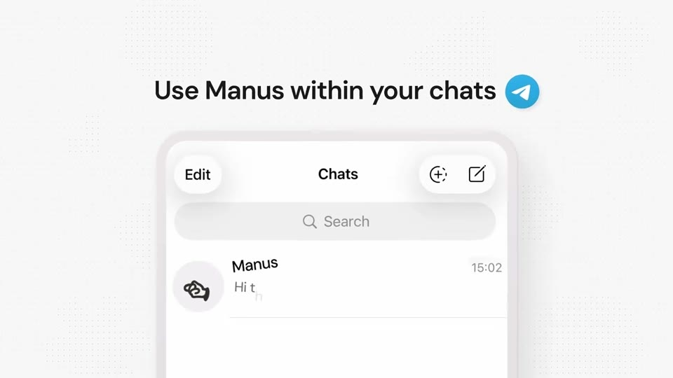

A device slab in a colour world
The phone is a flat, front-on slab with no hardware, set in a soft world (a gradient, a sky, paper, a painting). The camera pushes inside until one card fills the frame; the web is a window in the same world.






The rules
Phone: a white or cream slab with a 9–24 px frosted rim, no buttons, at 80–87% of height or cropped by the bottom edge. Taps are translucent dots.
World: a blurred gradient, a sky, a painted plate, a wireframe room; one colour family per film.
Push in ~2.3× in 0.5 s until one card fills 57–64% of the width. Chapters cut on 2.5 s title cards.
Words flank the phone (2–3 words left and right) instead of captions over the UI.
One outline can morph between devices: portrait to landscape in 0.42 s.
For Kallo
The honest way to show iOS and the web together: the iPhone as a cream slab on the brand sweep; its outline widens into the web window as “on your iPhone” becomes “on the web”, with the same meal on both.
Shows both platforms truthfully with real UI; no hands, no renders.
On its own it is a product demo, not a launch idea. Pair it with D1 or D3.
Films
SpaceXAI · Grok in X for iOS · 30M views
SpaceXAI · Grok iOS app · 10M views
Claude · Work tools on mobile · 8M views
SpaceXAI · Grok 4 free · 6M views
OpenAI · Codex on mobile · 5M views
Manus · Manus Desktop · 4M views
Manus · Manus Agents · 2M views
OpenAI · New voice models · 197K views
Manus · Slack connector · 122K views
Manus · Projects on mobile · 56K views